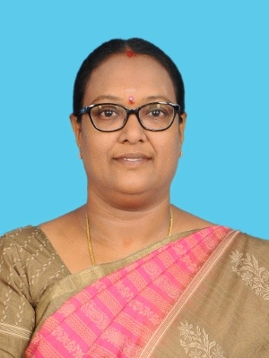

Dr. S. Gandhimathi
Assistant Professor

Phone: +91 9500350119
EMail: gandhimathiphd@gmail.com
Place: Karur, Tamil Nadu.
Executive Overview
Highly accomplished academic professional with
25 years of experience in Computer Science and Applications.
Proven Academic Leader with multiple tenures as Head of the
Department (HOD) and extensive experience as IQAC Coordinator.
Solid Research Portfolio including a Ph.D. in Computer Science, 15+
M.Phil. scholars guided, 15 journal publications, and 1 book.
Recognized by universities, served as a Chief Examiner and hold
Guideship Approval for M.Phil. scholars.
Education
- Ph.D. in Computer Science, Bharathidasan University, 2021
- M.Phil. in Computer Science, Periyar University, 2007
- M.C.A., Bharathidasan University, 2000
- B.Sc. in Computer Science, Bharathidasan University, 1997
Experience
- VALLUVAR COLLEGE OF SCIENCE AND
MANAGEMENT (AUTONOMOUS), KARUR - (2022 - PRESENT)
Assistant Professor cum HOD
- JAIRAMS ARTS AND SCIENCE COLLEGE, KARUR - (2021 - 2022)
Assistant Professor cum HOD
- P.G.P COLLEGE OF ARTS AND SCIENCE, NAMAKKAL - (2000 - 2020)
Assistant Professor cum HOD
Publications
- Participation in National Conferences / Seminars - 20
- Presented papers in National Conferences / Seminars - 18
- Journal Publications (Including Scopus / UGC) - 15
- Books Published - 1
Skills
- Data science and Data Structures
- Programming Languages: C, C++, Java, Python
- Academic Leadership: Head of the Department (HOD), IQAC Coordinator (NAAC), AICTE Coordinator.
- Curriculum Development and Research Guidance.
- University Administration
Other
My Vision
Why VIT?